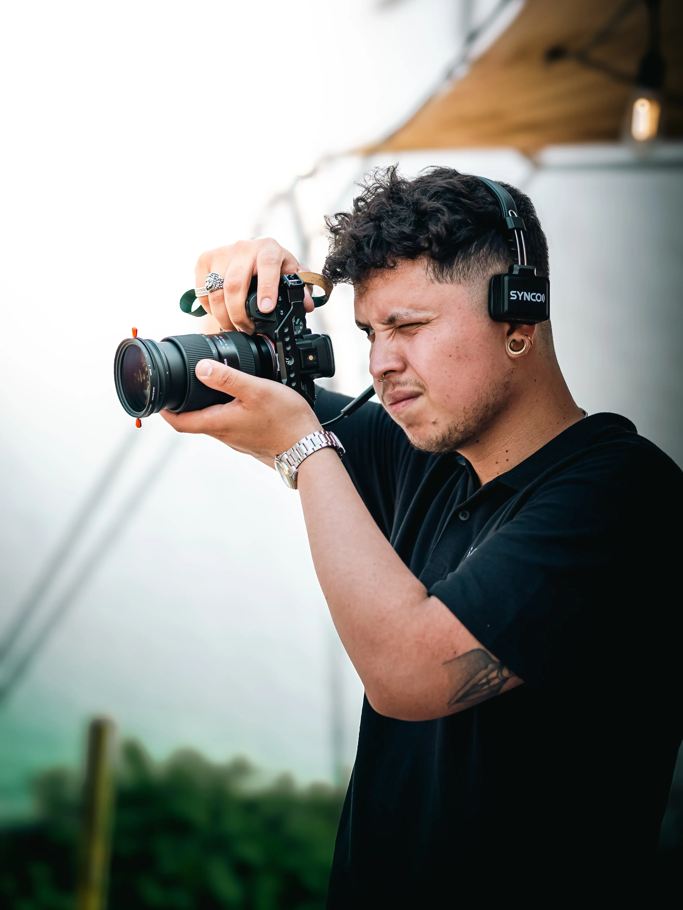
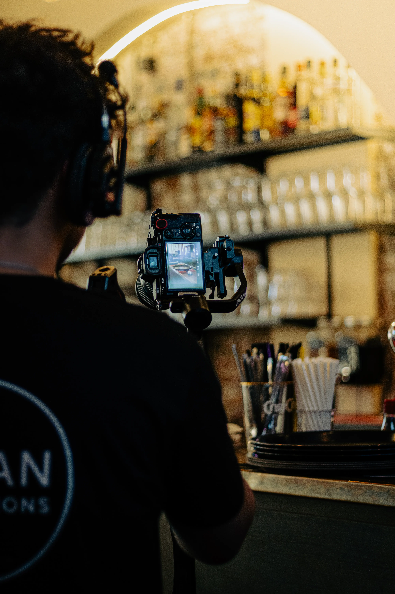

Je m’appelle Samuel Labarces. Photographe passionné basé à Nivelles et Bruxelles, je capture bien plus que des images : je raconte des histoires. Chaque visage est unique, chaque regard porte une émotion, chaque moment mérite d’être sublimé. Mon travail se concentre sur des portraits élégants, naturels, riches en émotions, où la lumière, les détails et l’authenticité jouent un rôle essentiel. Que ce soit lors d’un shooting, d’un événement ou d’un mariage, mon objectif est simple : créer des images vraies, sensibles, qui vous ressemblent. Vous êtes au centre du processus. Je prends le temps de vous écouter, de vous guider, et de construire une expérience sur-mesure, conviviale et professionnelle. Bienvenue dans mon univers.
TOSAN PRODUCTIONS
Photographe professionnel

"La photographie, c’est l’art de capturer l’invisible, l’instant où l’émotion devient éternelle."
Qui je suis ?
